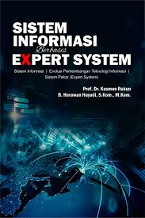
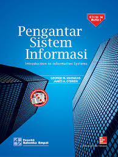
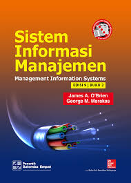

Pengertian Sistem Informasi dan Contoh Penerapan pada Dunia Industri
Teknologi dan manusia saat ini menjadi satu kesatuan dan menjadi dua hal yang tidak dapat dipisahkan. Dimana, kedua faktor tersebut salaing berkaitan dan dapat digabung menjadi sebuah sistem. istilah populer untuk saat ini dinamakan dengan sistem infomasi.
Berikut adalah buku tentang sistem infomasi:
Buku Satu

Rp. 100.000 Buku Dua

Rp. 760.000 Buku Tiga

Rp.450.000